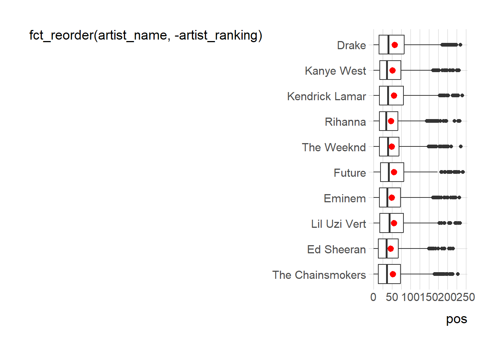

spotify_all <- read_csv('https://bcdanl.github.io/data/spotify_all.csv')Let’s analyze the spotify_all data:
🎶
Q1a
Find the ten most popular song. A value of a song is defined as a combination of a artist_name value and a track_name value. Who are artists for those ten most popular song?
Q1a <- spotify_all %>%
count(artist_name, track_name) %>%
arrange(-n) %>%
head(10)
Q1a# A tibble: 10 × 3
artist_name track_name n
<chr> <chr> <int>
1 Drake One Dance 143
2 Kendrick Lamar HUMBLE. 142
3 The Chainsmokers Closer 129
4 DRAM Broccoli (feat. Lil Yachty) 127
5 Post Malone Congratulations 119
6 Migos Bad and Boujee (feat. Lil Uzi Vert) 117
7 KYLE iSpy (feat. Lil Yachty) 115
8 Lil Uzi Vert XO TOUR Llif3 113
9 Aminé Caroline 107
10 Khalid Location 102Q1b
Find the five most popular artist in terms of the number of occurrences in the data.frame, spotify_all. What is the most popular song for each of the five most popular artist?
Q1b <- spotify_all %>%
group_by(artist_name) %>%
mutate(n_popular_artist = n()) %>%
ungroup() %>%
mutate( artist_ranking = dense_rank( desc(n_popular_artist) ) ) %>%
filter( artist_ranking <= 5) %>%
group_by(artist_name, track_name) %>%
mutate(n_popular_track = n()) %>%
group_by(artist_name) %>%
mutate(track_ranking = dense_rank( desc(n_popular_track) ) ) %>%
filter( track_ranking <= 2) %>% # I just wanted to see the top two tracks for each artist
select(artist_name, artist_ranking, n_popular_artist, track_name, track_ranking, n_popular_track) %>%
distinct() %>%
arrange(artist_ranking, track_ranking)
Q1b# A tibble: 10 × 6
# Groups: artist_name [5]
artist_name artist_ranking n_popular_artist track_name track_ranking
<chr> <int> <int> <chr> <int>
1 Drake 1 2715 One Dance 1
2 Drake 1 2715 Jumpman 2
3 Kanye West 2 1065 Gold Digger 1
4 Kanye West 2 1065 Stronger 2
5 Kendrick Lamar 3 1035 HUMBLE. 1
6 Kendrick Lamar 3 1035 DNA. 2
7 Rihanna 4 915 Needed Me 1
8 Rihanna 4 915 Work 2
9 The Weeknd 5 913 Starboy 1
10 The Weeknd 5 913 The Hills 2
# ℹ 1 more variable: n_popular_track <int>Q1c
Provide both (1) ggplot codes and (2) a couple of sentences to describe the relationship between pos and the ten most popular artists.
Q1c <- spotify_all %>%
group_by(artist_name) %>%
mutate(n_popular_artist = n()) %>%
ungroup() %>%
mutate( artist_ranking = dense_rank( desc(n_popular_artist) ) ) %>%
filter( artist_ranking <= 10)
# boxplot
ggplot(Q1c,
aes(x = pos, y = fct_reorder(artist_name, -artist_ranking)) ) +
geom_boxplot() +
stat_summary(
fun = mean,
color = 'red'
)
Q1d
Create the data.frame with pid-artist level of observations with the following four variables:
pid: playlist id playlist_name: name of playlist artist: name of the track’s primary artist, which appears only once within a playlist n_artist: number of occurrences of artist within a playlist
Q1d <- spotify_all %>%
count(pid, playlist_name, artist_name) %>%
rename(n_artist = n) %>%
arrange(pid, -n_artist, artist_name)